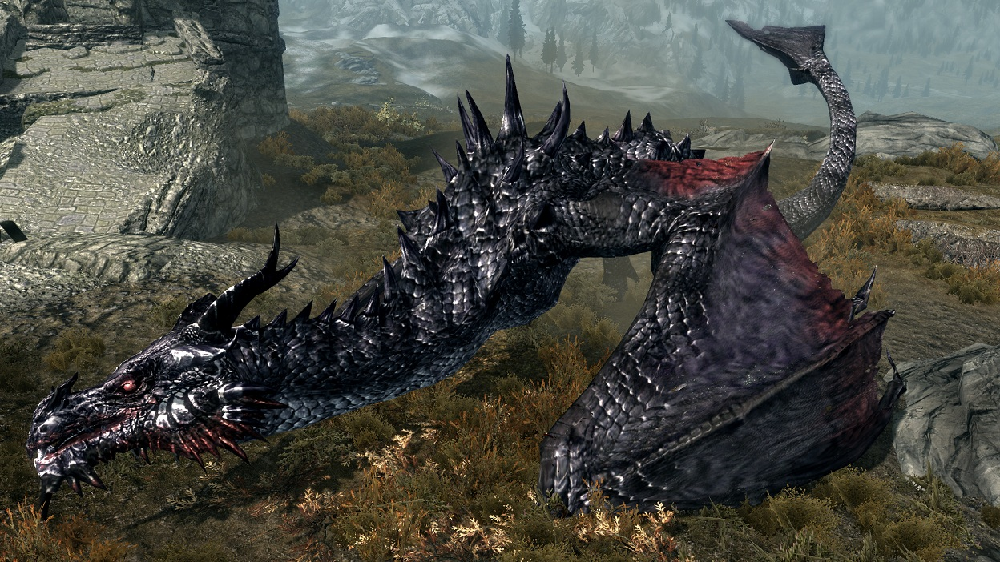
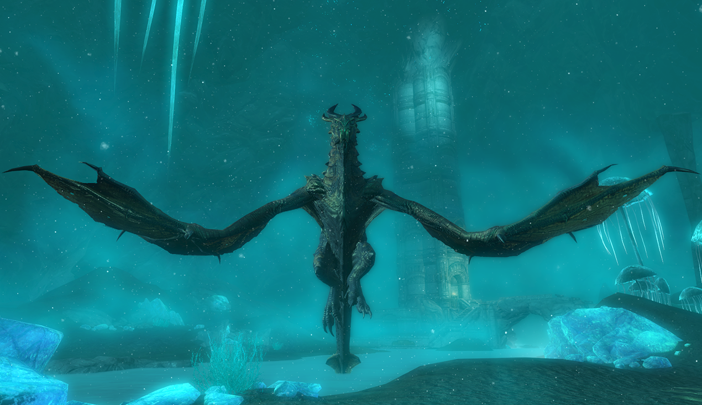

•Алдуин (Пожиратель Миров)
Алдуин, известный обитателям Скайрима как Пожиратель Миров, чрезвычайно могущественный дракон. Он изображается как злая сила, периодически уничтожающая мир, и Норды верят, что его возрождение предвещает конец света. Он – первенец Акатоша, старший брат Паартурнакса и самопровозглашённый вариант Акатоша.
Со слов Паартурнакса Алдуин однажды был назван величайшим творением Акатоша. Но он вскоре возгордился и предпочёл отказаться от своей основной роли Пожирателя Миров и приступить к завоеванию Мундуса самостоятельно при помощи своих друзей-драконов. Однако во время древней Войны Драконов он был изгнан при помощи Древнего Свитка. Возвращение Алдуина на Нирн совпало с появлением Довакина.
•Мирмулнир (Союз Удачливой Охоты)
Мирмульнир – второй дракон, после Алдуина, с которым встретится Довакин. Он появитя у Западной сторожевой Башни во время квеста Дракон в небе.
После того, как вы сразите его, Мирмульнир, поймет с кем сражался и крикнет: «Довакин! Нет!» перед смертью. Во время боя он может произнести еще несколько фраз на драконьем языке.
•Одавинг (Снежное Крыло Охотник)
Одавинг – Кровавый Дракон, который становится вашим союзником в ходе основного квеста. Его можно призвать, когда вы стоите на улице, использовав крик « Од-Ах-Виинг» . Его можно увидеть, парящим над Глоткой Мира и ждущим вашего зова, после того, как основной квест завершится. Его помощь неоценима на любом уровне, так как его невозможно убить, и он не покинет вас, пока рядом есть живые враги.
•Нааглив (Ярость Горит Увядает)
Нааглив – дракон, захороненный прямо за стенами Рорикстеда. Он один из именных драконов, которых Алдуин воскрешает в ходе основного квеста. Он будет кружить над Рорикстедом, но нападет только тогда, когда появится Довакин.
•Партурнакс (Честолюбие, Властелин и Жестокость)
Партурнакс – дракон-созерцатель, живущий на вершине Глотка Мира. Несмотря на это, Паартунакс, считающий себя именно таким существом, каким создал его «отец Акатош», охотно делится знаниями с Довакином, и остается гостеприимным даже при смертельной опасности.
•Винтурут - пробуждаемый Алдуином дракон.
Винтурут – именованный дракон, которого пробуждает Алдуин в ходе Основного квеста Скайрима. Он похоронен в кургане возле озера Йоргрим, где вы и можете с ним столкнуться. В какой-то момент основного квеста он восстанет из кургана, и после этого будет бродить по округе.
•Вилтириол (Темный Владыка Пламени)
Вилтириол – дракон, которого можно обнаружить неподалеку от Черного Предела. Его можно призвать, используя «Безжалостную Силу», стоя на левитирующей желтой сфере в Безмолвном Городе.
После того, как вы его призовете, он будет парить над городом и крепостью двемеров, выдыхая огонь, хотя и не целясь в вас. Затем он приземлится за пределами крепости и будет оставаться на земле до самого конца боя.